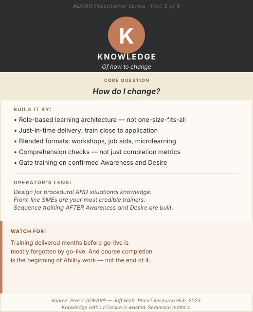

The training calendar is set. The curriculum is designed. The rooms are booked (or the Zoom links are sent). Completion rates are being tracked. By every standard project management metric, the Knowledge phase is fully underway.
And yet, three months after go-live, adoption is struggling and people are reverting to old behaviors.
The problem is rarely the content of the training. It is almost always the sequence.
Prosci states it plainly: many organizations offer training too soon, before their people have Awareness and Desire. When a person does not understand why a change is necessary, or has not yet decided they want to be part of it, they cannot effectively absorb the Knowledge of how to do it. The training still happens. The completion rate still looks fine. But the Knowledge doesn't stick, because the person was not ready to receive it.
This is the most structurally preventable failure mode in change management, and one of the most common.
Foundation
What Knowledge Actually Is
Knowledge in the ADKAR model covers two dimensions, both of which are necessary:
During the Transition
What individuals need to know to navigate the change itself
What the change entails, what the timeline is, what is expected of them at each stage, and where to get help.
In the Future State
What individuals need to know to perform effectively after go-live
The new processes, systems, tools, behaviors, and decision frameworks their role requires going forward.
An employee who understands the transition plan but doesn't know how to execute the new process will struggle at go-live. An employee who is trained on the new system but doesn't understand where they are in the transition, or what support is available, will feel abandoned and revert to what's familiar.
Knowledge is the bridge between "I want to change" and "I can change." Without it, even the most genuine Desire stalls. But it is a bridge, not a destination, and the most common mistake is treating training completion as evidence that change is complete. It is evidence that the foundation for Ability is in place. What comes next determines whether that foundation gets used.

ADKAR Practitioner Series · Part 3: Knowledge. The bridge between want and can.
Diagnosis
How to Confirm a Knowledge Barrier Point
Not every adoption failure is a Knowledge problem. The diagnostic question: does the person want to change but not know how?
Knowledge Gap Signals
- People are asking for more detail about how to perform specific tasks in the new state
- Training completion is low or training is being avoided
- Errors are concentrated on specific process steps rather than distributed across the workflow (suggests specific Knowledge gaps, not general Ability issues)
- Employees performing the new process in ways that are well-intentioned but incorrect, they understand the spirit but not the mechanics
- Managers report that their teams "don't feel equipped" rather than "don't want to do it"
A useful diagnostic: ask an employee to walk you through how they would handle a specific real-world scenario in the new process. If they can't, or if their answer contains significant errors or gaps, you have a Knowledge barrier. If they can describe it accurately but still struggle to execute it under real conditions, the barrier has shifted to Ability.
Program Design
Eight Blueprints for Building Knowledge Effectively
Gate Training on Awareness and Desire: Always
This is the most important sequencing principle in the entire Knowledge phase, and the one most frequently violated by project timelines.
Build explicit gates into your change program: do not launch role-specific training until ADKAR assessment data (or manager pulse checks, if formal assessment isn't available) confirms that Awareness and Desire are at adequate levels for the population being trained. "Adequate" doesn't mean perfect, some Desire development happens through the act of learning, but it means the population is not actively resistant and understands why the change is necessary.
Practically, this means building flexibility into the training calendar. If Awareness work is taking longer than planned for a specific function, delay their training cohort. Running training on schedule at the expense of sequencing is a guarantee of wasted investment.
The Role-Based Learning Architecture
The most common structural error in change training programs: designing one training program for all affected employees. A role-based learning architecture starts with a different question: not "what does everyone need to know?" but "what does each role need to know, specifically, to perform in the new state?"
The architecture step-by-step:
- Role map: Identify all affected roles and their primary impact from the change
- Capability gap analysis: For each role, what does the new state require that the current state doesn't? (Processes, systems, behaviors, decision criteria)
- Learning path design: For each role, what sequence of learning experiences closes those gaps?
- Format selection: Which elements require instructor-led sessions? Which are better delivered as self-paced modules, job aids, or peer coaching?
This architecture is more work upfront, and dramatically more effective in execution.
The Role Academy Model
For complex operational changes affecting large populations, cohort-based "academies" organized by role are among the most effective Knowledge delivery formats available. An academy brings together all individuals in a specific role cohort (e.g., "Process Owner Academy," "Frontline Supervisor Academy") through a sequenced curriculum that combines:
- Classroom or virtual instruction for conceptual frameworks and process foundations
- Simulation or sandbox work for hands-on practice in a risk-free environment
- Case-based learning anchored in real scenarios from their specific operational context
- Peer discussion structured around challenges and edge cases that the formal curriculum doesn't fully cover
The academy model works because it creates a cohort identity, participants go through the change together and support each other during the transition. That social infrastructure carries into the Ability phase.
Microlearning Libraries — The 90-Day Companion
Foundational training delivers the broad competency framework. But the real Knowledge demand happens in the first 90 days after go-live, when employees are encountering real-world scenarios that training didn't anticipate: edge cases, exception handling, cross-functional dependencies.
A microlearning library is a searchable, modular repository of short content (2–5 minutes each) built around specific tasks, decisions, and questions in the new process. Key design principles:
- Task-indexed, not topic-indexed. People search for "how do I process a return for a damaged item" not "module 3: exception handling."
- Available at the point of work. Mobile-accessible, ideally surfaced through the systems people are already using.
- Maintained. A microlearning library that isn't updated as the process evolves becomes a source of errors, not Knowledge.
A well-designed microlearning library reduces support ticket volume significantly in the first 90 days post-go-live, and builds Ability by allowing people to self-serve when they encounter real scenarios.
Just-in-Time Sequencing — Deliver Knowledge Close to Application
Knowledge retention research is clear: people forget the majority of what they learn in a training session if they do not apply it within days, not months. The "Ebbinghaus forgetting curve" shows up as the go-live performance dip that project teams experience when training was delivered weeks or months before the go-live date.
Just-in-time sequencing structures training delivery around the moment of application, not the project schedule:
| Content Type | Optimal Timing | Rationale |
|---|---|---|
| Foundational concepts | Early: weeks before go-live | Durable, provides orientation context; won't decay as quickly |
| Process- and system-specific training | 2–4 weeks before go-live | Close enough to be retained; far enough to allow questions and reinforcement |
| Exception handling, edge cases, advanced functions | First 30 days post-go-live | Employees are encountering real scenarios and ready to absorb them |
This sequencing often conflicts with project schedules, which typically front-load training. A training calendar built around the project schedule optimizes for completion metrics, not Knowledge retention. Push back on that structure.
Digital Adoption Platforms for Technology-Centric Changes
For changes that involve a new or redesigned technology system, Digital Adoption Platforms (DAPs), tools like Whatfix, WalkMe, or Pendo, provide in-application guidance that appears contextually, exactly when a user needs it.
DAPs deliver guided walkthroughs for first-time tasks, embedded directly in the application; contextual tooltips that surface relevant guidance based on where the user is in the workflow; and progress tracking that shows which features or processes employees are and aren't using, flagging where support is needed.
Research consistently shows that DAPs improve Knowledge retention and reduce help desk load compared to standalone training programs alone because they deliver Knowledge at the exact moment it is needed, in the exact context where it will be applied. For ERP implementations, system migrations, or large-scale technology change programs, a DAP investment is among the highest-ROI Knowledge-delivery tools available.
The Knowledge Map
A Knowledge map is a visual tool that connects the change's objectives to the specific Knowledge units required, by role. It answers: "What does this role need to know, by go-live date, to perform effectively in the new state?"
Uses: curriculum design (ensures every required Knowledge unit has a delivery mechanism and owner); gap identification (makes visible when a Knowledge requirement doesn't have a corresponding training artifact); progress communication (helps managers explain to their teams what they will be learning and why); and handoff tool (communicates to the Ability-building phase exactly what foundation was laid in training).
The Knowledge map does not need to be a complex document. A well-structured spreadsheet with roles, Knowledge units, delivery formats, timing, and status columns is sufficient. Its value is in the discipline of articulating exactly what Knowledge is being built, for whom, and when, rather than assuming that "the training program" covers it.
Check for Understanding — Not Just Completion
There is a difference between a person who has completed training and a person who has understood it. Course completion metrics are easy to collect and easy to report to a steering committee. They are not evidence that Knowledge has been built.
Build comprehension checks into the curriculum, structured activities that require application, not just recall:
- Scenario-based questions that present a real situation from the new workflow and ask the learner to identify the correct action
- Role-play exercises in classroom settings where learners walk through a process end-to-end with a coach providing feedback
- Post-training structured dialogues (not quizzes) where a manager or coach asks: "Walk me through how you would handle [specific scenario] in the new process." This reveals understanding, or its absence, in a way that a multiple-choice assessment cannot.
Comprehension checks also create a coaching trigger: when a learner struggles with a specific scenario, you know exactly what to focus on in the Ability support phase that follows.
The Operator's Lens
Procedural and situational Knowledge are both required. In process-heavy operational environments, training programs frequently nail procedural Knowledge (the steps in the process) and underinvest in situational Knowledge (what to do when the process doesn't cover the situation). Front-line operational staff encounter edge cases constantly, exception handling is a significant part of their daily work. If the training program doesn't address how to handle exceptions in the new process, the default behavior is to revert to the old process. Build exception scenarios explicitly into the curriculum.
Shifts and field operations require point-of-work formats. Classroom training assumes that all employees work in an environment where a classroom session is feasible. In shift-based operations, 24-hour coverage, field teams, or distributed sites, this assumption breaks down. Design Knowledge delivery formats that work outside a classroom: supervisor-led team huddles with embedded knowledge checks, mobile-accessible job aids, and short video content that can be consumed on a device during a break. If the training program was designed for day-shift office workers, it will not reach your night-shift operational staff without specific adaptation.
Internal SMEs are your most credible trainers. A senior operator with 15 years of process experience, trained to deliver a 30-minute workflow walkthrough, carries more credibility with their peers than an L&D professional delivering the same content. Invest in identifying, equipping, and supporting internal subject matter experts as frontline trainers. Their Knowledge of "how this actually works in our environment" makes the training relevant in a way that external facilitation cannot replicate.
Common Traps
Mistakes to Avoid
Treating training completion as the finish line.
Completion is the beginning of Ability development, not the end of Knowledge work. Measure comprehension, not coverage.
Delivering training too early.
Knowledge decays when it cannot be applied. Deliver training as close to the moment of application as the program allows.
One size fits all.
Role-generic training programs are easier to design and harder to apply. The investment in role-based learning architecture pays for itself in adoption rates.
Skipping the sequencing gate.
If Awareness and Desire haven't been built for a population, training that population is waste. Build the gate and defend the sequence.
Get the sequence right, and Knowledge becomes the moment the change becomes real.
Sources: Prosci ADKAR® Research Hub. Prosci Knowledge and Training guidance. Ebbinghaus forgetting curve research. Whatfix: "ADKAR Model — What Is It and How to Use It." Prosci Best Practices in Change Management, 2023.